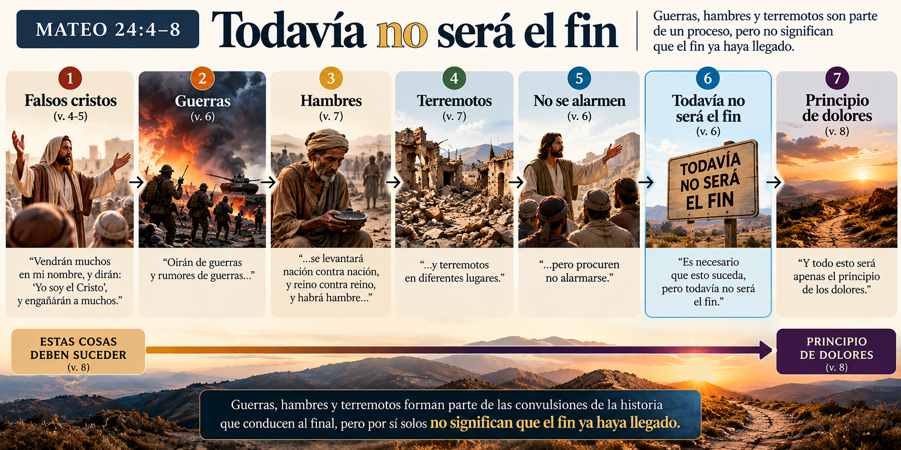
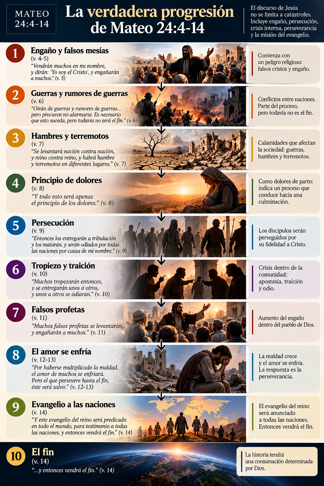
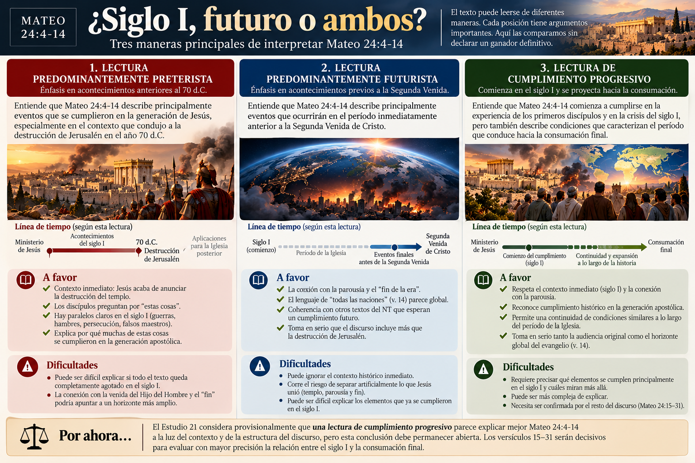
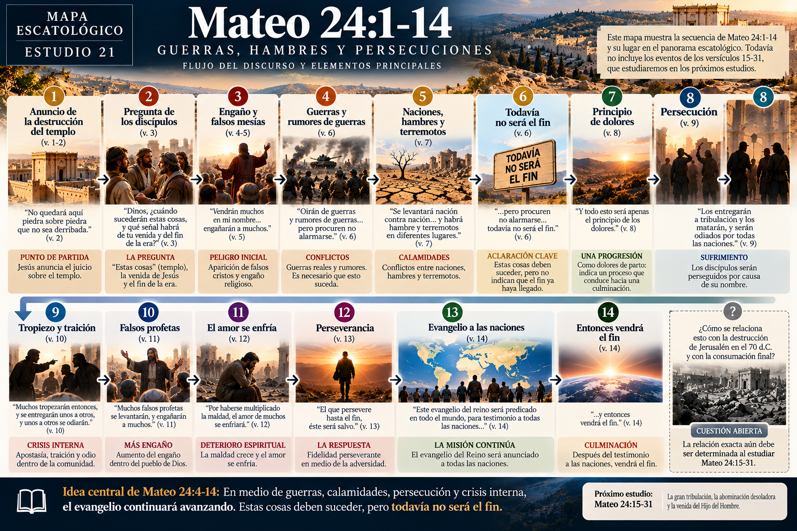

Texto principal: Mateo 24:1–14
Paralelos: Marcos 13:1–13; Lucas 21:5–19
Idea central: Jesús no enseña a sus discípulos a calcular el fin observando cada guerra o desastre. Al contrario: les advierte que no sean engañados ni alarmados. En medio de un mundo convulsionado, la misión continúa.
1. Venimos del Monte de los Olivos
En el estudio anterior vimos que Mateo 24 no comienza con una pregunta abstracta acerca del fin del mundo.
Jesús acaba de anunciar algo estremecedor acerca del templo:
“De cierto les digo que no quedará aquí piedra sobre piedra que no sea derribada.”
Mateo 24:2
Los discípulos entonces preguntan por “estas cosas”, por la venida de Jesús y por el fin de la era.
Por eso debemos resistir la tentación de leer Mateo 24 como si Jesús estuviera respondiendo directamente a nuestras noticias del siglo XXI.
Primero debemos escuchar el discurso como lo escucharon Pedro, Jacobo, Juan y Andrés.
Y la primera palabra de Jesús es sorprendente.
No dice:
“Miren las guerras.”
Dice:
“Tengan cuidado de que nadie los engañe.”
Mateo 24:4, sentido del texto
2. Mateo 24:4–5 — “Que nadie los engañe”
Jesús comienza:
“Porque vendrán muchos en mi nombre, y dirán: ‘Yo soy el Cristo’, y engañarán a muchos.”
El primer peligro escatológico mencionado es, por tanto, religioso.
Aparecerán personas haciendo afirmaciones mesiánicas.
Esto es importante porque cambia nuestra manera de leer todo lo que sigue.
El discurso no fue dado principalmente para alimentar curiosidad acerca del futuro, sino para producir discernimiento y fidelidad.
Marcos conserva prácticamente la misma advertencia (Mr 13:5–6), y Lucas añade que algunos anunciarán que “el tiempo está cerca” (Lc 21:8).
La instrucción de Jesús en Lucas es especialmente significativa:
“No vayan tras ellos.”
Una primera regla escatológica
Cuando alguien utiliza guerras, catástrofes o acontecimientos políticos para afirmar con seguridad:
“Ahora sí sabemos que el fin es inmediato”,
Mateo 24 debería producir cautela antes que entusiasmo.
Jesús mismo comienza advirtiendo contra quienes generan falsas expectativas.
3. Mateo 24:6 — “Oirán de guerras y rumores de guerras”
Llegamos a una de las frases más conocidas del capítulo.
“Ustedes oirán de guerras y rumores de guerras…”
Es fácil detenerse ahí.
Pero Jesús continúa:
“…pero procuren no alarmarse. Es necesario que esto suceda, pero todavía no será el fin.”
“Todavía no será el fin”
Jesús no presenta las guerras simplemente como una señal inequívoca de que el fin acaba de comenzar.
En cierto sentido hace lo contrario.
Los discípulos escucharán noticias alarmantes, pero no deben concluir inmediatamente:
“Llegó el fin.”
La estructura es:
Durante dos mil años prácticamente cada generación cristiana ha conocido guerras.
Por eso:
“Hay una guerra importante”
no equivale automáticamente a:
“Mateo 24 demuestra que la Segunda Venida ocurrirá inmediatamente.”
4. Mateo 24:7 — Naciones, hambres y terremotos
Jesús amplía la descripción:
“Porque se levantará nación contra nación, y reino contra reino, y habrá hambre y terremotos en diferentes lugares.”
Tenemos tres imágenes:
Este tipo de lenguaje encaja perfectamente dentro del mundo profético y apocalíptico judío. Las conmociones entre naciones y las catástrofes forman parte del lenguaje bíblico acerca de crisis y juicio.
Pero nuevamente debemos observar lo que Jesús no dice.
- cantidad de guerras;
- magnitud de terremotos;
- frecuencia de terremotos;
- número de hambrunas;
- porcentaje de incremento;
- fórmula matemática para calcular el fin.
Por eso intentar convertir Mateo 24:7 en una gráfica estadística del fin supera lo que el texto explícitamente proporciona.
El argumento del aumento suele derivarse del siguiente versículo y de la metáfora de los dolores de parto, pero debemos examinarla cuidadosamente.
5. Mateo 24:8 — “Principio de dolores”
Jesús interpreta lo anterior:
“Y todo esto será apenas el principio de los dolores.”
ὠδίν — ōdín
Significa literalmente dolor de parto.
Por eso algunas traducciones expresan la idea como:
“principio de los dolores de parto”.
La imagen tiene antecedentes importantes en los profetas.
Isaías, Jeremías, Miqueas y otros utilizan los dolores de parto para representar angustia, juicio y crisis asociadas con la intervención de Dios (cf. Is 26:17–18; Jer 4:31; Miq 4:9–10).
¿Significa que cada vez habrá más terremotos?
No necesariamente.
Los dolores de parto naturalmente sugieren un proceso que conduce hacia una culminación. Pero el texto no explica exactamente cómo debe medirse ese proceso históricamente.
Por eso debemos distinguir:
Esto será más claro conforme avancemos por Mateo 24.

6. Algo cambia en Mateo 24:9
Hasta ahora Jesús habló de lo que sucede alrededor de los discípulos.
Ahora habla de lo que les sucederá a ellos.
“Entonces los entregarán a tribulación y los matarán, y serán odiados por todas las naciones por causa de mi nombre.”
La escatología de Jesús deja de ser simplemente:
¿Qué ocurrirá en el mundo?
y se convierte en:
¿Cómo vivirán mis discípulos cuando llegue el sufrimiento?
Esto es crucial.
Para Jesús, prepararse para el futuro no significa solamente reconocer acontecimientos.
Significa permanecer fiel cuando seguirlo tenga un costo.
7. ¿Esto ocurrió con los primeros cristianos?
Sí.
El libro de Hechos contiene repetidamente:
- arrestos;
- amenazas;
- azotes;
- encarcelamientos;
- persecuciones;
- martirio.
Esteban muere (Hch 7).
Jacobo es ejecutado (Hch 12:2).
Pedro es encarcelado (Hch 12).
Pablo sufre repetidas persecuciones.
Esto significa que los primeros discípulos podían reconocer las palabras de Jesús dentro de su propia experiencia.
Pero eso todavía no demuestra que todo Mateo 24:9–14 quedara agotado en el siglo I.
Ese es otro argumento y necesitaría demostrarse por separado.
8. Mateo 24:10–12 — El peligro también viene desde adentro
Jesús continúa:
“Muchos tropezarán entonces, y se entregarán unos a otros, y unos a otros se odiarán.”
Después añade:
“Muchos falsos profetas se levantarán, y engañarán a muchos.”
Y finalmente:
“Por haberse multiplicado la maldad, el amor de muchos se enfriará.”
Mateo introduce aquí un énfasis especialmente fuerte en la crisis dentro de la comunidad: apostasía, traición, falsos profetas y enfriamiento del amor.
Observemos la progresión:
El problema escatológico más peligroso quizá no sea el terremoto.
Puede ser dejar de seguir a Cristo.
9. Mateo 24:13 — “El que persevere hasta el fin”
Entonces Jesús dice:
“Pero el que persevere hasta el fin, éste será salvo.”
Aquí aparece una de las grandes palabras del discurso:
perseverancia.
Jesús no promete a sus discípulos una existencia sin sufrimiento.
Les llama a permanecer fieles.
Esto conecta profundamente con el resto del Nuevo Testamento: la esperanza cristiana no consiste simplemente en identificar correctamente señales proféticas, sino en perseverar en Cristo.
¿Qué significa aquí “hasta el fin”?
Existen varias posibilidades.
- perseverar hasta el final de la propia vida;
- perseverar a través de la tribulación descrita;
- perseverar hasta la consumación escatológica.
10. Mateo 24:14 — Una señal diferente
Entonces aparece algo notable:
“Y este evangelio del reino será predicado en todo el mundo, para testimonio a todas las naciones, y entonces vendrá el fin.”
Después de guerras, hambres, terremotos y persecuciones, Jesús vuelve la mirada hacia algo completamente diferente:
el avance del evangelio.
Mientras los reinos humanos luchan…
el Reino de Dios será anunciado.
Mientras los discípulos son perseguidos…
el evangelio continuará avanzando.
Mientras algunos abandonan la fe…
otros llevarán el mensaje a las naciones.
Esta tensión es central para entender el pasaje.
11. “En todo el mundo”: una palabra importante
Mateo utiliza aquí:
οἰκουμένη — oikouménē
Literalmente puede significar “la tierra habitada / el mundo habitado”.
Es interesante porque esta palabra puede utilizarse para el mundo conocido y, en determinados contextos, para el mundo romano. Por ejemplo, Lucas 2:1 la utiliza al hablar del censo de Augusto.
Esto produce una cuestión interpretativa importante.
Interpretación A — El mundo romano
Algunos entienden que Jesús habla primariamente de la expansión del evangelio por el mundo grecorromano antes de la destrucción de Jerusalén.
Esta lectura puede señalar textos como Colosenses 1:6 y 1:23, donde Pablo utiliza lenguaje extraordinariamente amplio acerca de la difusión del evangelio.
Interpretación B — Todas las naciones del mundo
Otros señalan especialmente la siguiente expresión:
“a todas las naciones”
y conectan Mateo 24:14 con Mateo 28:19:
“Vayan y hagan discípulos a todas las naciones.”
Según esta lectura, Jesús mira más allá del siglo I hacia la misión mundial de la Iglesia antes de la consumación.
Una posibilidad integradora
También es posible que exista un patrón de comienzo y expansión:
la misión efectivamente invade el mundo romano durante la generación apostólica, pero la comisión de Cristo continúa extendiéndose hacia todas las naciones.
Será importante no resolverla artificialmente antes de estudiar el resto del discurso.
12. “Entonces vendrá el fin”
Aquí sí tenemos una afirmación temporal explícita:
Pero Jesús no dice que los discípulos puedan calcular cuándo esa misión ha alcanzado matemáticamente el punto exacto requerido.
Tampoco dice que la Iglesia pueda manipular la fecha de su venida mediante una fórmula misionera.
El énfasis es más sencillo y poderoso:
la oposición del mundo no podrá detener el propósito de Dios.
El evangelio llegará hasta donde Dios ha determinado.
Y la historia tendrá un final.

13. Entonces, ¿qué son las guerras, hambres y terremotos?
Podemos responder ahora con más precisión.
No debemos decir:
“No tienen ninguna importancia.”
Jesús mismo las menciona.
Pero tampoco:
“Cada guerra demuestra que la Segunda Venida ocurrirá inmediatamente.”
porque Jesús dice:
“todavía no será el fin.”
La lectura más equilibrada parece ser:
El texto no nos concede esa precisión.
14. Tres grandes interpretaciones
Este pasaje suele leerse dentro de tres marcos principales.
Lectura predominantemente preterista
Mateo 24:4–14 describe principalmente acontecimientos anteriores a la destrucción de Jerusalén en el año 70 d.C.
Tiene a favor el contexto inmediato: Jesús acaba de anunciar la destrucción del templo y habla directamente a sus discípulos.
El problema aparece si se intenta demostrar que cada elemento del discurso queda completamente agotado en ese período.
Lectura predominantemente futurista
Estos versículos describen principalmente acontecimientos que caracterizarán el período inmediatamente anterior a la Segunda Venida.
Tiene a favor la conexión del discurso con la parousía y el “fin de la era”.
El peligro aparece cuando se ignora la audiencia original y se trasladan automáticamente todos los versículos al futuro.
Lectura de cumplimiento progresivo
Los acontecimientos comienzan a manifestarse en la experiencia de los discípulos y en la crisis del siglo I, pero describen también condiciones que caracterizan el período que conduce hacia la consumación.
Esto permite tomar en serio tanto:
el contexto histórico inmediato
como
el horizonte escatológico más amplio.
Pero debemos mantenerla provisional.
Los versículos siguientes pueden confirmarla, modificarla o exigir mayor precisión.

15. La gran sorpresa del pasaje
Preguntamos:
“¿Cuáles son las señales del fin?”
Pero Mateo 24:4–14 parece responder primero otra pregunta:
“¿Cómo debe vivir el discípulo mientras espera?”
La respuesta es extraordinariamente práctica:
No sean engañados.
No se alarmen.
Permanezcan fieles.
No permitan que su amor se enfríe.
Perseveren.
Proclamen el evangelio.
La escatología de Jesús produce fidelidad, no obsesión cronológica.
16. Cristo en el centro
El corazón del pasaje no son las guerras.
Es Cristo.
Los falsos mesías intentan ocupar su lugar.
Los discípulos son perseguidos por su nombre.
La perseverancia consiste en permanecer fieles a él.
Y el mensaje que avanza entre las naciones es:
“el evangelio del Reino”.
La historia puede parecer dominada por guerras, imperios y catástrofes.
Jesús presenta otra realidad:
mientras los reinos humanos se levantan y caen, el evangelio del Reino continúa avanzando.
Y el final de la historia no pertenece al caos.
Pertenece a Dios.
📌 Conclusión
Mateo 24:1–14 no nos entrega un código para convertir las noticias internacionales en una fecha para el fin.
Nos prepara para vivir entre la primera venida de Cristo y la consumación.
Habrá engaño.
Habrá conflictos.
Habrá catástrofes.
Habrá persecución.
Algunos abandonarán la fe.
Pero también ocurrirá algo que ninguna de esas fuerzas podrá detener:
“el evangelio del Reino será anunciado.”
Por eso la frase decisiva de esta primera sección quizá no sea:
“Habrá guerras.”
Sino:
“No se alarmen… todavía no será el fin.”
La pregunta cristiana no es solamente:
“¿Cuánto falta?”
sino:
“¿Estamos permaneciendo fieles a Cristo mientras esperamos?”
🧭 Mapa Escatológico — actualización del Estudio 21
Jesús anuncia la destrucción del templo
Los discípulos preguntan por “estas cosas”, la parousía y el fin
Engaño / falsos mesías 🟢
Guerras, hambres y terremotos 🟢
“Todavía no será el fin” 🟢
Principio de dolores de parto 🟢
Persecución + apostasía + falsos profetas 🟢
Perseverancia de los discípulos 🟢
Evangelio del Reino anunciado a las naciones 🟢
“Entonces vendrá el fin” 🟢
¿Cómo se relaciona exactamente todo esto con el año 70 y con la consumación final? ❓
No cerramos todavía esa última pregunta. Mateo 24:15–31 será decisivo para responderla.
